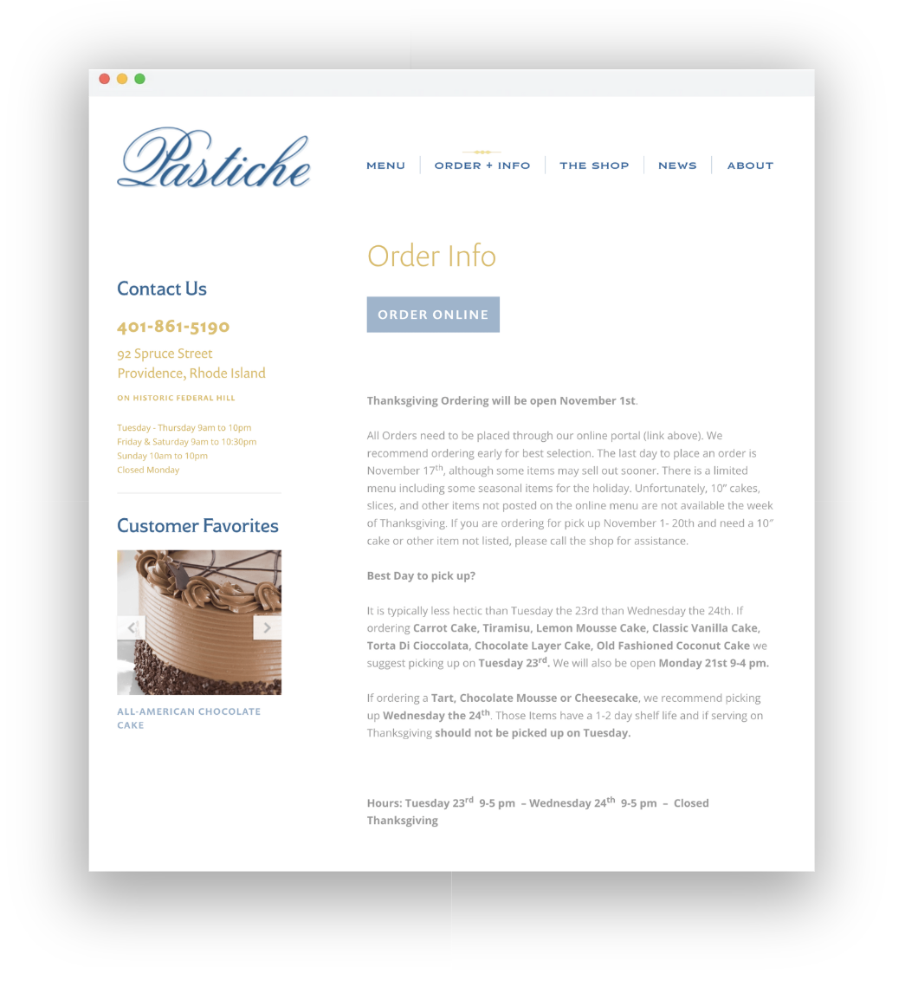
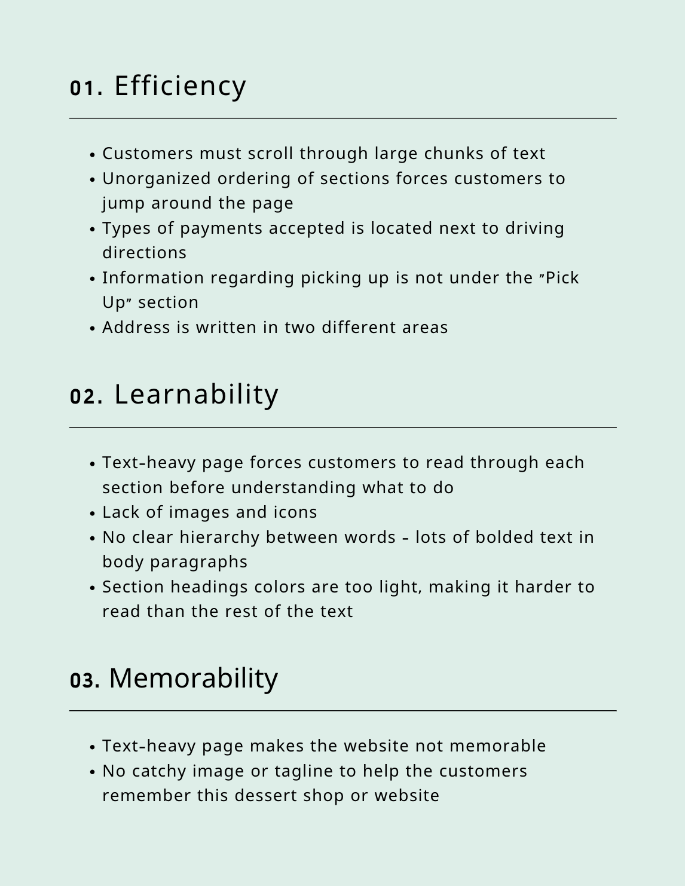

Order from a local bakery
in three simple steps

Overview
Pastiche is a local bakery located in Providence, Rhode Island. Throughout the past few years, an increasing number of customers have begun to use Pastiche's online ordering system. Often times, how well a website for a store is made directly impacts the store's sales and customer retention rates. For this project, I redesigned Pastiche's ordering webpage to increase its efficiency, learnability, and memorability.
Pastiche's Current Order Webpage
Figure I. The image above displays what Pastiche's current ordering section looks like
Existing Webpage and Issues
The current Pastiche website allows customers to purchase pastries and cakes online before picking them up in-store. However, there are several issues to the webpage regarding efficiency, learnability, and memorability.
The main issue with Pastiche's "Order and Information" page is the sectioning. For instance, the spacing between paragraphs under one section is sometimes even larger than the spacing between different sections. To improve usability and efficiency, it would be helpful to order the sections such that it flows chronologically, from "Order" to "Pick Up" to "Refrigeration."
Another major issue is that the page is extremely text-heavy. Both returning users and new users must read through multiple paragraphs before understanding each section. To improve memorability and learnability, it would be helpful to shorten paragraphs, include icons for each section, or link certain details to another page.
